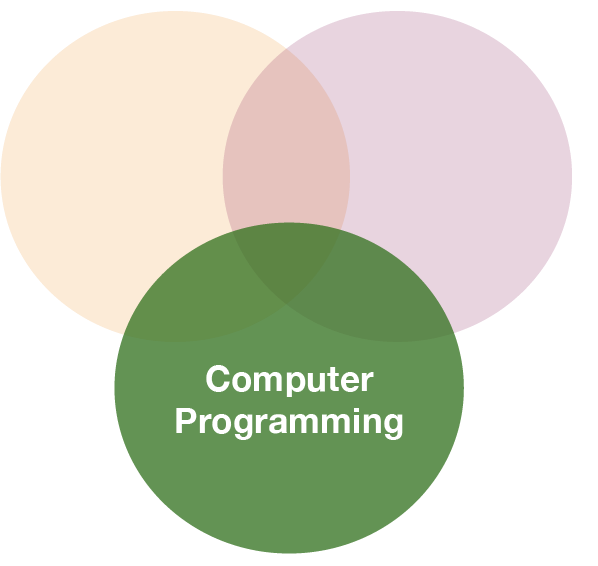

Datenanalyse mit R
5 - Data wrangling - 2.Tidy Daten
Saskia A. Otto
BSH 11/02 - 13/02 2019
2. Tidy data

So what is 'tidy' data?
- A way to organize tabular data
So what is 'tidy' data?
- A way to organize tabular data
source: Data Import cheat sheet (licensed under CC-BY-SA)
So what is 'tidy' data?
- A way to organize tabular data
- Provides a consistent data structure across packages.
- Is easy to aggregate, visualise and model (i.e. works well with dplyr, ggplot, and lm)
- Complements R’s vectorized operations --> R will automatically preserve observations as you manipulate variables.
So what is 'tidy' data?
- A way to organize tabular data
- Provides a consistent data structure across packages.
- Is easy to aggregate, visualise and model (i.e. works well with dplyr, ggplot, and lm)
- Complements R’s vectorized operations --> R will automatically preserve observations as you manipulate variables.
source: Data Import cheat sheet (licensed under CC-BY-SA)
So what is 'tidy' data?
- A way to organize tabular data
- Provides a consistent data structure across packages.
- Is easy to aggregate, visualise and model (i.e. works well with dplyr, ggplot, and lm)
- Complements R’s vectorized operations --> R will automatically preserve observations as you manipulate variables.
- Something than many people have intuitively applied
- But Hadley Wickham developed a whole framework around this concept and with the tidverse packages, and particularly 'tidyr', it is much easier to adopt

Another example with the hydrographical data from ICES
What can be potential issues with such a table?
An example with the hydrographical data from ICES
What can be potential issues with such a table?
- Where should the coordinates per station be added? In an extra table?
- Where should the date be added? On top of the station names?
- What to do with the other parameters, salinity and oxygen? Different files?
- Not clear that the values represent temperature!
Solution: Restructure the table again
Long vs. wide data
- The 'long' data format is considered more tidy as
- each observation (here temperature measurement) is in its own row
- each variable has its own column → station and temperature are not mixed anymore!
- BUT: some functions require the data to be in a wide format --> you need to adjust your data table in that case
2. Tidy data - How to change between data formats?
'tidyr' provides two functions for that:
gather()andspread()
gather()
Moves column names into a key column, gathering the column values into a single value column.
spread()
Moves the unique values of a key column into the column names, spreading the values of a value column across the new columns.
In the R console you would write for the hydrographical example
cruise <- tibble(pressure = 1:5, station_1 = c(14.1,14.0,14.0,13.9,13.8),
station_2 = c(15.3,15.4,15.2,15.0,14.9))
cruise
# Make tibble long
cruise_long <- gather(cruise, station_1, station_2, key = "station", value = "temp")
cruise_long
# Reshape tibble back into wide format
cruise_wide <- spread(cruise_long, station, temp)
cruise_wide # same as cruise!
TRY IT YOURSELF!
Your turn...
Quiz 1: Restructuring data formats
Make the following temperature data long and then wide again:
(cruise <- tibble(pressure = 1:5, station_1 = c(14.1,14.0,14.0,13.9,13.8),
station_2 = c(15.3,15.4,15.2,15.0,14.9)) )
## # A tibble: 5 x 3
## pressure station_1 station_2
## <int> <dbl> <dbl>
## 1 1 14.1 15.3
## 2 2 14 15.4
## 3 3 14 15.2
## 4 4 13.9 15
## 5 5 13.8 14.9
Solution: Restructuring data formats
# Make tibble long
cruise_long <- gather(cruise, station_1, station_2,
key = "station", value = "temp")
cruise_long
## # A tibble: 10 x 3
## pressure station temp
## <int> <chr> <dbl>
## 1 1 station_1 14.1
## 2 2 station_1 14
## 3 3 station_1 14
## 4 4 station_1 13.9
## 5 5 station_1 13.8
## 6 1 station_2 15.3
## 7 2 station_2 15.4
## 8 3 station_2 15.2
## 9 4 station_2 15
## 10 5 station_2 14.9
Solution: Restructuring data formats
# Reshape tibble back into wide format
cruise_wide <- spread(cruise_long, station, temp)
cruise_wide # same as cruise!
## # A tibble: 5 x 3
## pressure station_1 station_2
## <int> <dbl> <dbl>
## 1 1 14.1 15.3
## 2 2 14 15.4
## 3 3 14 15.2
## 4 4 13.9 15
## 5 5 13.8 14.9
2. Tidy data - Handling missing values and other replacements
Handling missing values (NAs)
- Leave them in and accomodate algorithm to missing data, e.g. missing values are skipped during calculations like "pairwise deletion"; can cause problems
- Delete rows/columns
- Interpolate missing values
- replace NAs by mean/median (advantage median: distribution can be skewed)
- replace NAs by regression (linear interpolation)
Checking for NAs
You can apply the function is.na() to single vectors and single variables in a data frame as you learned in lecture 2. Here an example with the ICES dataset
is.na(hydro$temp)
## [1] FALSE FALSE FALSE FALSE FALSE FALSE FALSE FALSE FALSE FALSE FALSE
## [12] FALSE FALSE FALSE FALSE FALSE FALSE FALSE FALSE FALSE FALSE FALSE
## [23] FALSE FALSE TRUE FALSE FALSE FALSE FALSE FALSE FALSE FALSE TRUE
## [34] FALSE FALSE FALSE TRUE TRUE TRUE TRUE TRUE TRUE TRUE TRUE
## [45] TRUE TRUE TRUE TRUE TRUE TRUE TRUE TRUE TRUE TRUE TRUE
## [56] TRUE TRUE FALSE FALSE FALSE FALSE FALSE FALSE FALSE FALSE FALSE
## [67] FALSE FALSE FALSE FALSE FALSE FALSE FALSE FALSE FALSE FALSE FALSE
## [78] FALSE FALSE FALSE FALSE FALSE FALSE FALSE TRUE FALSE FALSE TRUE
## [89] FALSE FALSE TRUE FALSE FALSE FALSE FALSE FALSE FALSE FALSE FALSE
## [100] FALSE FALSE FALSE FALSE FALSE FALSE FALSE FALSE FALSE FALSE FALSE
## [111] FALSE FALSE FALSE FALSE FALSE FALSE FALSE FALSE FALSE FALSE FALSE
## [122] FALSE FALSE FALSE FALSE TRUE TRUE TRUE TRUE TRUE TRUE TRUE
## [133] TRUE TRUE TRUE TRUE FALSE FALSE TRUE FALSE FALSE FALSE FALSE
## [144] FALSE FALSE FALSE FALSE FALSE FALSE TRUE FALSE FALSE FALSE FALSE
## [155] FALSE TRUE FALSE FALSE FALSE FALSE TRUE FALSE FALSE FALSE FALSE
## [166] FALSE FALSE FALSE FALSE FALSE TRUE FALSE FALSE FALSE FALSE FALSE
## [177] FALSE FALSE FALSE FALSE FALSE FALSE FALSE FALSE FALSE FALSE FALSE
## [188] FALSE FALSE FALSE FALSE FALSE FALSE FALSE FALSE FALSE FALSE FALSE
## [199] FALSE FALSE FALSE FALSE FALSE FALSE FALSE FALSE FALSE FALSE FALSE
## [210] FALSE FALSE FALSE FALSE FALSE FALSE FALSE FALSE FALSE FALSE FALSE
## [221] FALSE FALSE FALSE FALSE FALSE FALSE FALSE FALSE FALSE FALSE FALSE
## [232] FALSE FALSE FALSE FALSE FALSE FALSE FALSE FALSE FALSE FALSE FALSE
## [243] FALSE FALSE FALSE FALSE FALSE FALSE FALSE FALSE FALSE FALSE FALSE
## [254] FALSE FALSE FALSE FALSE FALSE FALSE FALSE FALSE FALSE FALSE FALSE
## [265] FALSE FALSE FALSE FALSE FALSE FALSE FALSE FALSE FALSE FALSE FALSE
## [276] FALSE FALSE FALSE FALSE FALSE FALSE FALSE FALSE FALSE FALSE FALSE
## [287] FALSE FALSE FALSE FALSE FALSE FALSE FALSE FALSE FALSE FALSE FALSE
## [298] FALSE FALSE FALSE FALSE FALSE FALSE FALSE FALSE FALSE FALSE FALSE
## [309] FALSE FALSE FALSE FALSE FALSE FALSE FALSE FALSE FALSE FALSE FALSE
## [320] FALSE FALSE FALSE FALSE FALSE FALSE FALSE FALSE FALSE FALSE FALSE
## [331] FALSE FALSE FALSE FALSE FALSE FALSE FALSE FALSE FALSE FALSE FALSE
## [342] FALSE FALSE FALSE FALSE FALSE FALSE FALSE FALSE FALSE FALSE FALSE
## [353] FALSE FALSE FALSE FALSE FALSE FALSE FALSE FALSE FALSE FALSE FALSE
## [364] FALSE FALSE FALSE FALSE FALSE FALSE FALSE FALSE FALSE FALSE FALSE
## [375] FALSE FALSE FALSE FALSE FALSE FALSE FALSE FALSE FALSE FALSE FALSE
## [386] FALSE FALSE FALSE FALSE FALSE FALSE FALSE FALSE FALSE FALSE FALSE
## [397] FALSE FALSE FALSE FALSE FALSE FALSE FALSE FALSE FALSE FALSE FALSE
## [408] FALSE FALSE FALSE FALSE FALSE FALSE FALSE FALSE FALSE FALSE FALSE
## [419] FALSE TRUE FALSE FALSE FALSE FALSE FALSE FALSE FALSE FALSE FALSE
## [430] FALSE FALSE FALSE FALSE FALSE FALSE FALSE FALSE FALSE FALSE FALSE
## [441] FALSE FALSE FALSE FALSE FALSE FALSE FALSE FALSE FALSE FALSE FALSE
## [452] FALSE FALSE FALSE FALSE FALSE FALSE FALSE FALSE FALSE FALSE FALSE
## [463] FALSE FALSE FALSE FALSE FALSE FALSE FALSE FALSE FALSE FALSE FALSE
## [474] FALSE FALSE FALSE FALSE FALSE FALSE FALSE FALSE FALSE FALSE FALSE
## [485] FALSE FALSE FALSE FALSE FALSE FALSE FALSE FALSE FALSE FALSE FALSE
## [496] FALSE FALSE FALSE FALSE FALSE FALSE FALSE FALSE FALSE FALSE FALSE
## [507] FALSE FALSE FALSE FALSE FALSE FALSE FALSE FALSE FALSE FALSE FALSE
## [518] FALSE FALSE FALSE FALSE FALSE FALSE FALSE FALSE FALSE FALSE FALSE
## [529] FALSE FALSE FALSE FALSE FALSE FALSE FALSE FALSE FALSE FALSE FALSE
## [540] FALSE FALSE FALSE FALSE FALSE FALSE FALSE FALSE FALSE FALSE FALSE
## [551] FALSE FALSE FALSE FALSE FALSE FALSE FALSE FALSE FALSE FALSE FALSE
## [562] FALSE FALSE FALSE FALSE FALSE FALSE FALSE FALSE FALSE FALSE FALSE
## [573] FALSE FALSE FALSE FALSE FALSE FALSE FALSE FALSE FALSE FALSE FALSE
## [584] FALSE FALSE FALSE FALSE FALSE FALSE FALSE FALSE FALSE FALSE FALSE
## [595] FALSE FALSE FALSE FALSE FALSE FALSE FALSE FALSE FALSE FALSE FALSE
## [606] FALSE FALSE FALSE FALSE FALSE FALSE FALSE FALSE FALSE FALSE FALSE
## [617] FALSE FALSE FALSE FALSE FALSE FALSE FALSE FALSE FALSE FALSE FALSE
## [628] FALSE FALSE FALSE FALSE FALSE FALSE FALSE FALSE FALSE FALSE FALSE
## [639] FALSE FALSE FALSE FALSE FALSE FALSE FALSE FALSE FALSE FALSE FALSE
## [650] FALSE FALSE FALSE FALSE FALSE FALSE FALSE FALSE FALSE FALSE FALSE
## [661] FALSE FALSE FALSE FALSE FALSE FALSE FALSE FALSE FALSE FALSE FALSE
## [672] FALSE FALSE FALSE FALSE FALSE FALSE FALSE FALSE FALSE FALSE FALSE
## [683] FALSE FALSE FALSE FALSE FALSE FALSE FALSE FALSE FALSE FALSE FALSE
## [694] FALSE FALSE FALSE FALSE FALSE FALSE FALSE FALSE FALSE FALSE FALSE
## [705] FALSE FALSE FALSE FALSE FALSE FALSE FALSE FALSE FALSE FALSE FALSE
## [716] FALSE FALSE FALSE FALSE FALSE FALSE FALSE FALSE FALSE FALSE FALSE
## [727] FALSE FALSE FALSE FALSE FALSE FALSE FALSE FALSE FALSE FALSE FALSE
## [738] FALSE FALSE FALSE FALSE FALSE FALSE FALSE FALSE FALSE FALSE FALSE
## [749] FALSE FALSE FALSE FALSE FALSE FALSE FALSE FALSE FALSE FALSE FALSE
## [760] FALSE FALSE FALSE FALSE FALSE FALSE FALSE FALSE FALSE FALSE FALSE
## [771] FALSE FALSE FALSE FALSE FALSE FALSE FALSE FALSE FALSE FALSE FALSE
## [782] FALSE FALSE FALSE FALSE FALSE FALSE FALSE FALSE FALSE FALSE FALSE
## [793] FALSE FALSE FALSE FALSE FALSE FALSE FALSE FALSE FALSE FALSE FALSE
## [804] FALSE FALSE FALSE FALSE FALSE FALSE FALSE FALSE FALSE FALSE FALSE
## [815] FALSE FALSE FALSE FALSE FALSE FALSE FALSE FALSE FALSE FALSE FALSE
## [826] FALSE FALSE FALSE FALSE FALSE FALSE FALSE FALSE FALSE FALSE FALSE
## [837] FALSE FALSE FALSE FALSE FALSE FALSE FALSE FALSE FALSE FALSE FALSE
## [848] FALSE FALSE FALSE FALSE FALSE FALSE FALSE FALSE FALSE FALSE FALSE
## [859] FALSE FALSE FALSE FALSE FALSE FALSE FALSE FALSE FALSE FALSE FALSE
## [870] FALSE FALSE FALSE FALSE FALSE FALSE FALSE FALSE FALSE FALSE FALSE
## [881] FALSE FALSE FALSE FALSE FALSE FALSE FALSE FALSE FALSE FALSE FALSE
## [892] FALSE FALSE FALSE FALSE FALSE FALSE FALSE FALSE FALSE FALSE FALSE
## [903] FALSE FALSE FALSE FALSE FALSE FALSE FALSE FALSE FALSE FALSE FALSE
## [914] FALSE FALSE FALSE FALSE FALSE FALSE FALSE FALSE FALSE FALSE FALSE
## [925] FALSE FALSE FALSE FALSE FALSE FALSE FALSE FALSE FALSE FALSE FALSE
## [936] FALSE FALSE FALSE FALSE FALSE FALSE FALSE FALSE FALSE FALSE FALSE
## [947] FALSE FALSE FALSE FALSE FALSE FALSE FALSE FALSE FALSE FALSE FALSE
## [958] FALSE FALSE FALSE FALSE FALSE FALSE FALSE FALSE FALSE FALSE FALSE
## [969] FALSE FALSE FALSE FALSE FALSE FALSE FALSE FALSE FALSE FALSE FALSE
## [980] FALSE FALSE FALSE FALSE FALSE FALSE FALSE FALSE FALSE FALSE FALSE
## [991] FALSE FALSE FALSE FALSE FALSE FALSE FALSE FALSE FALSE FALSE
## [ reached getOption("max.print") -- omitted 29012 entries ]
..... Puh!
Remember, the is.na() function returns a logical vector of the same length then the original vector (which has, in our case, 30012 values!).
BETTER: If you wrap the function by the sum()function, you can calculate the sum of all TRUEs in this vector:
sum(is.na(hydro$temp))
## [1] 1714
sum(is.na(hydro$psal))
## [1] 2382
You can do the same with the entire data frame
sum(is.na(hydro))
## [1] 13809
A shortcut to check NAs in all variables
A very fast way to see whether and how many NAs you have in a dataframe is to use the summary() function, which displays not only some descriptive statistics but also the number of NAs:
summary(hydro[ ,9:11]) # for display purposes I selected not all columns
## temp psal doxy
## Min. :-0.700 Min. : 0.065 Min. : 0.000
## 1st Qu.: 4.200 1st Qu.: 6.548 1st Qu.: 5.870
## Median : 6.067 Median : 7.430 Median : 6.960
## Mean : 7.668 Mean : 8.082 Mean : 6.493
## 3rd Qu.:10.500 3rd Qu.: 8.436 3rd Qu.: 8.200
## Max. :24.400 Max. :34.016 Max. :11.760
## NA's :1714 NA's :2382 NA's :7304
tidyr provides 3 useful functions for handling NAs
drop_na(data, ...): Drops entire rows containing missing values.fill(data, ..., .direction = c("down", "up")): Fills missing values in using the previous (direction = "down") or following (direction = "up") entry. Useful if only values that change are recorded.replace_na(data, replace = list(), ...): Replaces missing values with a value specified for each column.
Your turn...
Task: Handling NAs
We have the following dataset:
df <- tibble(
station = paste0("station_", 1:50), # combines "station" and each number
# draws 20 random numbers from normal distributed population:
temp = rnorm(50, mean = 14, sd = 2),
sal = rnorm(50, mean = 8, sd = 0.5)
)
random_na_n <- sample(1:50, 1) # draw random number of NA
random_na_pos <- sample(1:50, random_na_n) # random position sampling
df$temp[random_na_pos] <- NA # fill these positions in variable 'temp' with NAs
df$sal[random_na_pos] <- NA
Task: Handling NAs
Quiz 2: Counts of NAs
How many NAs are in column temp and sal?
Quiz 3: Replace NAs in temp
Try to deal with the NAs in the variable 'temp' in the following way:
- Drop all rows with NAs in 'temp'
- Replace NAs with the previous value
- Replace NAs with -999
Solution:
summary(df) # shows NAs per column
drop_na(df, temp)
fill(df, temp) # default is previous value
replace_na(df, list(temp = -999))
Overview of more functions:
Cheat sheet is freely available at https://www.rstudio.com/resources/cheatsheets/
Handling dates and times
Measurement of time is highly idiosyncratic
Measurement of time is highly idiosyncratic
Surprisingly difficult for computers!
Dates and times in R
To see how R handles dates and times, have a look at Sys.time():
Sys.time()
## [1] "2019-02-12 06:59:15 CET"
You see, first comes the year-month-day, then the time (h:m:s), and then the time zone. If you type
unclass(Sys.time())
## [1] 1549951155
You get the number of seconds since 1 January 1970.
Dates and times in R
- Two basic classes of date/times:
- POSIXlt
- POSIXct
- POSIXlt
- In tidyverse 3 types of date/time data that refer to an instant in time:
Dates and times in R
- Two basic classes of date/times:
- POSIXlt
- POSIXct
- POSIXlt
- in tidyverse 3 types of date/time data that refer to an instant in time:
- date: Tibbles print this as
<date>. - time within a day: Tibbles print this as
<time>. - date-time is a date plus a time: it uniquely identifies an instant in time (typically to the nearest second). Tibbles print this as
<dttm>.
The 'lubridate' package
- Makes it easier to work with dates and times.
- Handles a wide variaty of formats automatically.
- Is not part of the core tidyverse so it needs to be installed once and loaded additionally every time:.
install.packages("lubridate")
library(lubridate)
Create DATE objects from string
Depending on the order of the date components you have 3 functions to choose from:
ymd("2017-11-17") # YEAR-MONTH-DAY
## [1] "2017-11-17"
mdy("Nov 17th, 2017") # MONTH-DAY-YEAR
## [1] "2017-11-17"
dmy("17-Nov-2017") # DAY-MONTH-YEAR
## [1] "2017-11-17"
- Only the order matters! The format is not important as lubridate will automatically recognize it.
- You can apply the function to an entire vector.
Create DATE-TIME objects from strings
Simply combine ymd, mdy or dmy with
_hif you have only the hour_hmif you have hour and minute_hmsfor hour:min:sec
# Date with HOUR-MIN-SEC
ymd_hms("2017-11-17 12:11:59")
## [1] "2017-11-17 12:11:59 UTC"
# Date with HOUR-MIN
mdy_hm("11/17/2017 12:11")
## [1] "2017-11-17 12:11:00 UTC"
Create DATE-TIME objects from strings (cont)
If the time zone is not UTC (default) specify the tz argument
mdy_hm("11/17/2017 12:11", tz = "CET")
## [1] "2017-11-17 12:11:00 CET"
mdy_hm("11/17/2017 12:11", tz = "Europe/Helsinki")
## [1] "2017-11-17 12:11:00 EET"
CET = Central European Time, EET = Eastern European Time
Switch between date-time and date
You can switch between both formats with as_date() and as_datetime() (but you might loose information):
dt_utc <- mdy_hm("11/17/2017 12:11")
dt_utc
## [1] "2017-11-17 12:11:00 UTC"
d_utc <- as_date(dt_utc)
d_utc
## [1] "2017-11-17"
as_datetime(d_utc)
## [1] "2017-11-17 UTC"
Extract date components
For aggregation purposes its often useful to extract individual components. Lubridate has the following helper functions (all have simply the name of the component you want to extract):
year()month()mday()- day of the monthyday()- day of the yearwday()- day of the weekhour(),minute(),second()
dt_utc <- mdy_hm("11/17/2017 12:11")
year(dt_utc)
## [1] 2017
yday(dt_utc)
## [1] 321
To learn more on functions offered by lubridate read the vignette or chapter 16 in R for Data Science.
Your turn...
Import the following dataset
library(tidyverse)
date_ex <- read_csv("data/date_time_examples.csv")
print(date_ex, n = 5)
## # A tibble: 10 x 8
## date1 date2 date3 sampling_start_CET sampling_end_UTC year month
## <chr> <chr> <chr> <dttm> <dttm> <dbl> <dbl>
## 1 11-0… 8.11… 8 No… 2017-11-08 09:54:00 2017-11-08 10:40:00 2017 11
## 2 11-0… 9.11… 9 No… 2017-11-09 08:15:00 2017-11-09 09:07:00 2017 11
## 3 11-1… 10.1… 10 N… 2017-11-10 08:06:00 2017-11-10 09:09:00 2017 11
## 4 11-1… 11.1… 11 N… 2017-11-11 10:37:00 2017-11-11 11:59:00 2017 11
## 5 11-1… 12.1… 12 N… 2017-11-12 08:21:00 2017-11-12 09:02:00 2017 11
## # … with 5 more rows, and 1 more variable: day <dbl>
Quiz 4: Handling dates
Which of the variables have been correctly parsed as dates?
- date1
- date2
- date3
- sampling_start_CET
- sampling_end_UTC
- year
- month
- day
Quiz 5: Handling dates
Convert variables date1, date2, and date3 into the date format.
Which are the correct functions for each date format?
Do they look the same after conversion?
Exercise: Date-time in the ICES hydrographical data
As preparation for the following data manipulation, import the ICES data, change the variable names, and check the date-time variable. Was the format correctly parsed? (Don't forget to set the working directory beforehand!)
hydro <- read_csv("data/1111473b.csv")
# Change names to e.g.
names(hydro) <- c("cruise", "station", "type", "date_time",
"lat", "long", "depth", "pres", "temp", "psal", "doxy")
Create 3 new columns that contain the
- year
- month
- day
Overview of functions you learned today
base package: is.na(), summary(),
Sys.time(), unclass(Sys.time())
tidyr package: gather(), spread(),
drop_na(), fill(), replace_na()
lubridate package: ymd, mdy, dmy, ymd_hms, mdy_hm
as_date(), as_datetime()
year(), month(), mday(), yday(), wday(),
hour(), minute(), second(),
How do you feel now.....?
Totally confused?

Go thorougly through the tasks and quizzes. Read the chapter 12 Tidy Data and chapter 16 on dates and times in 'R for Data Science'.
Totally bored?

Then play around already with the full hydro dataset "1111473b.csv" and make it tidy.
Totally content?
Then go grab a coffee, lean back and enjoy the rest of the day...!

Bei weiteren Fragen kontaktieren Sie mich unter:
saskia.otto@uni-hamburg.de
http://www.researchgate.net/profile/Saskia_Otto
http://www.github.com/saskiaotto

Diese Arbeit ist lizensiert unter der
Creative Commons Attribution-ShareAlike 4.0 International License
mit Ausnahme externer
Materialien gekennzeichnet durch die source: Angabe.
Bild auf Titel- und Abschlussfolie: Frühjahrsblüte in der Nordsee
USGS/NASA Landsat:
Spring Color in the North Sea, Landsat 8 - OLI, May 7, 2018
(unter CC0 lizenz)